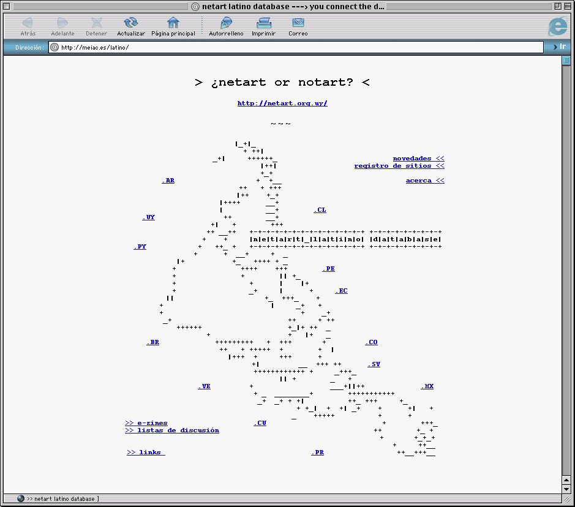

ARTE E INTERNET
Christo & Jeanne-Claude, presentación por Carlos Arturo Fernández, 1997.


DOCUMENTA DONE

Vuk Ćosić, 1997.
💾

Presentación "Christo & Jeanne-Claude" en un diskette, MAMM, 1997.
CERRO NUTIBARA
Proyecto de remodelación del cerro nutibara, Alcadia de Medellín, 2019.

Sendero cultural en el cerro nutibara, Alcadia de Medellín, 2019.

Diario "El Mundo", Mayo 19, 1983.

Diario "El Colombiano", Mayo 19, 1983.

Diario "El Mundo", Octubre 10, 1983.

Diario "El Colombiano", Diciembre 1, 1983.

Construcción del Cerro Nutibara, Octubre, 1989.

Diario "El Colombiano", Enero 4, 1984.

Diario "El Colombiano", Enero 4, 1984.
RIOGRANDE II

Concurso Nacional de Arte Riogrande II, 1989.
Proyecto de remodelación del cerro nutibara, Alcadia de Medellín, 2019.
Represa Riogrande II, Antioquia, 2015.

inconcluso.land, Juan Covelli + Sebastián Mira, 2019.
BIENALES DE VIDEOARTE
royecto de remodelación del cerro nutibara, Alcadia de Medellín, 2019.
NETART LATINO DATABASE

NETART LATINO DATABASE, Brian Mackern, 1999-2004.
MEDELAB / EL PUERTO / LABSURLAB
royecto de remodelación del cerro nutibara, Alcadia de Medellín, 2019.
EPISODIOS DIGITALES
royecto de remodelación del cerro nutibara, Alcadia de Medellín, 2019.
TIME-BASED MEDIA CONSERVATION

Time-based Media Conservation, 2019.